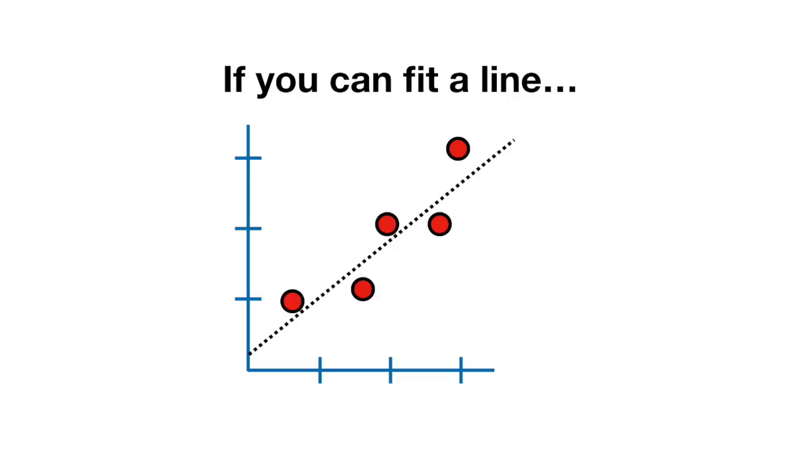
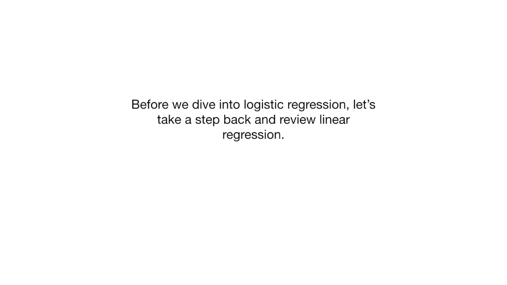
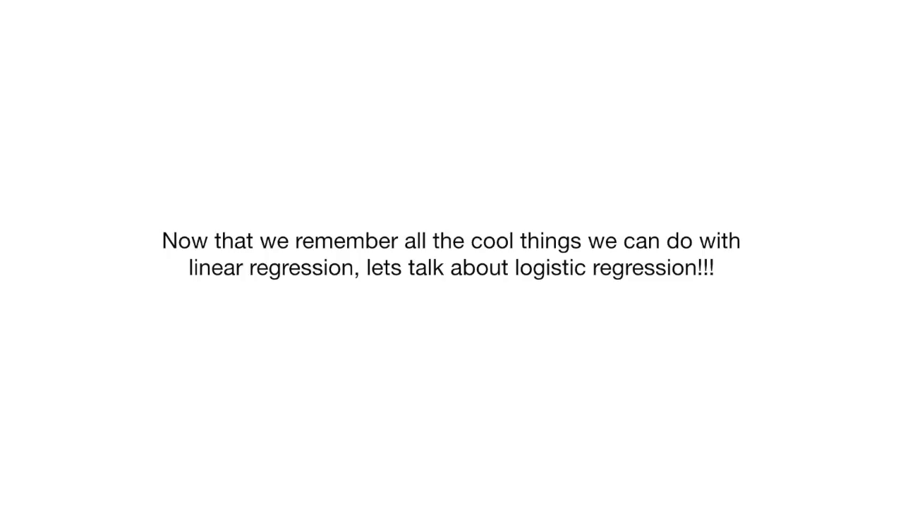
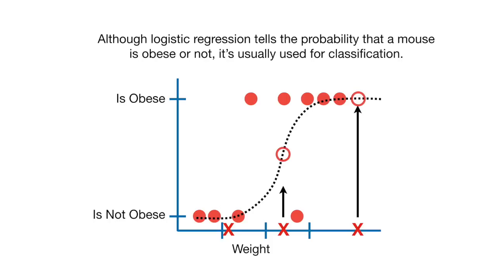
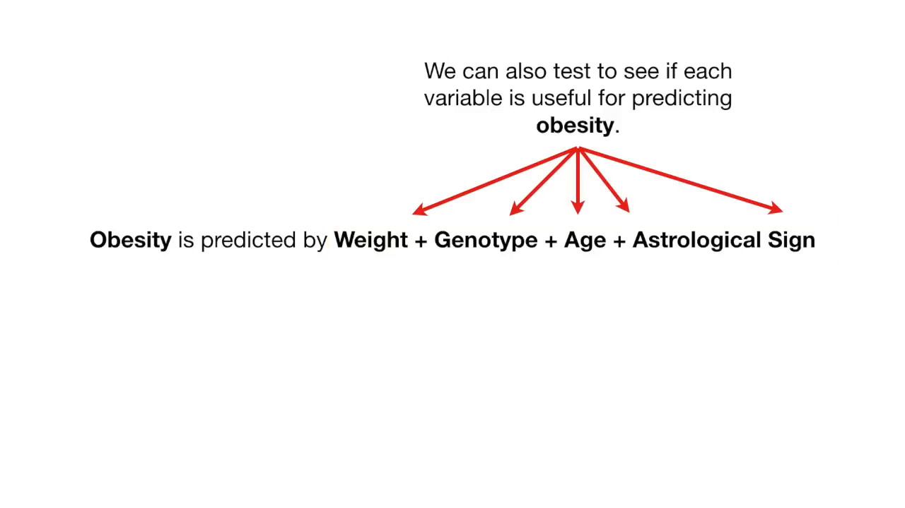
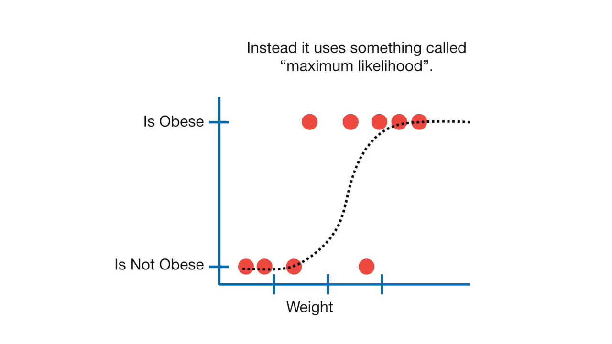

Notes
Introduction (0.00)
The lecture, presented by Josh Starmer, introduces the topic of logistic regression, a technique used in traditional statistics and machine learning. Logistic regression is a type of regression analysis used for predicting a binary outcome, such as 0 or 1, yes or no, or true or false. The lecture aims to explain the concept of logistic regression and its applications.

Review of Linear Regression (24.20)
Before diving into logistic regression, the lecture reviews linear regression, a technique used for predicting continuous outcomes. Linear regression involves fitting a line to the data and calculating the coefficient of determination (R-squared) and the p-value. The lecture explains that linear regression can be used for both traditional statistics and machine learning, and that it can be used to predict continuous outcomes such as size.

Logistic Regression (186.48)
Logistic regression is similar to linear regression, except it predicts a binary outcome instead of a continuous outcome. The lecture explains that logistic regression fits an S-shaped logistic function to the data, which ranges from 0 to 1. This function represents the probability of a binary outcome, such as the probability of a mouse being obese given its weight.

Applications of Logistic Regression (254.32)
Logistic regression has many applications in machine learning, including classification and prediction. The lecture explains that logistic regression can be used to classify new samples using continuous and discrete measurements. For example, a logistic regression model can be used to predict whether a mouse is obese or not based on its weight and genotype.

Comparison of Models (319.08)
The lecture explains that logistic regression can be used to compare simple and complex models. In simple models, a single variable is used to predict the binary outcome, while in complex models, multiple variables are used. The lecture explains that logistic regression can be used to test whether each variable is useful for predicting the binary outcome, and to identify the most important variables.

Maximum Likelihood (421.24)
The lecture explains that logistic regression uses maximum likelihood to fit the model to the data. Maximum likelihood involves calculating the likelihood of observing the data given the model, and then selecting the model with the highest likelihood. The lecture explains that maximum likelihood is used instead of least squares because logistic regression is used for binary outcomes, and least squares is not applicable to binary outcomes.

Conclusion (525.08)
In conclusion, the lecture provides an introduction to logistic regression, a technique used in traditional statistics and machine learning for predicting binary outcomes. The lecture explains the concept of logistic regression, its applications, and how it is used to compare simple and complex models. The lecture also explains the maximum likelihood method used to fit the model to the data
.
Takeaways
- Logistic regression is a technique that can be used for traditional statistics as well as machine learning, and is used to predict whether something is true or false instead of predicting a continuous value.
- Logistic regression fits an S-shaped logistic function to the data, which goes from 0 to 1 and tells you the probability that a mouse is obese based on its weight.
- Logistic regression is usually used for classification, where if the probability a mouse is obese is greater than 50%, it is classified as obese, otherwise it is classified as not obese.
- Logistic regression can work with continuous data like weight and age, and discrete data like genotype and astrological sign.
- We can test to see if each variable is useful for predicting obesity, and if not, it means that the variable is not helping to prediction.
- We use Wald's test to figure out if a variable's effect on the prediction is significantly different from zero, and if not, we can leave it out to save time and space.
- Logistic regression's ability to provide probabilities and classify new samples using continuous and discrete measurements makes it a popular machine learning method.
- Logistic regression uses maximum likelihood to fit the curve to the data, which is different from linear regression's use of least squares.
- Logistic regression can be used to assess what variables are useful for classifying samples, and can help us determine which variables are not useful and can be left out.
- Astrological sign was found to be "totes useless" in predicting obesity, meaning it is not a useful variable to include in the model.
Glossary
- Classification: The process of assigning a sample to a specific category or group based on its characteristics.
- Continuous data: Data that can take on any value within a certain range, such as weight or age.
- Discrete data: Data that can only take on specific, distinct values, such as genotype or astrological sign.
- Genotype: The genetic makeup of an individual, referring to the specific combination of genes they possess.
- Least squares: A method of fitting a line to data by minimizing the sum of the squares of the residuals.
- : A measure of the probability of observing a particular set of data given a particular model or hypothesis.
- Linear regression: A statistical method used to predict the value of a continuous outcome variable based on one or more predictor variables.
- Logistic regression: A statistical method used to predict the probability of a binary outcome variable (e.g. 0/1, yes/no) based on one or more predictor variables.
- Maximum likelihood: A method of estimating model parameters by finding the values that maximize the likelihood of observing the data.
- Multiple regression: A statistical method used to predict the value of a continuous outcome variable based on multiple predictor variables.
- P-value: A measure of the probability of observing a result as extreme or more extreme than the one observed, given that the null hypothesis is true.
- Residuals: The differences between the observed values of a variable and the predicted values based on a model.
- R-squared: A measure of the proportion of the variance in the outcome variable that is explained by the predictor variables.
- Statistical significance: A measure of the probability that an observed result is due to chance, rather than a real effect.
- Wald's test: A statistical test used to determine whether the effect of a predictor variable on the outcome variable is statistically significant.